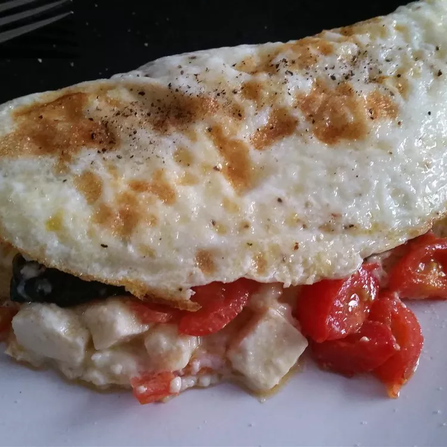

Omelette

Description
Easy and filling egg white omelette stuffed with veggies and tangy feta.
Ingredients
- cooking spray
- 3 egg whites
- salt and ground black pepper to taste
- ¼ cup chopped fresh spinach, or more to taste
- 6 cherry tomatoes, sliced
- 2 tablespoons crumbled feta cheese
Steps
- Heat a skillet over medium heat and spray with cooking spray.
- Whisk egg whites with salt and pepper in a bowl.
- Pour egg mixture into the heated skillet and swirl until eggs cover entire bottom of skillet
- cook for 1 to 2 minutes.
- Arrange spinach, tomatoes, and feta cheese in the middle of the eggs.
- Cook until edges of eggs begin to curl up, 2 to 3 more minutes.
- Loosen omelet from the skillet using a spatula and fold in half
- continue cooking until cheese is melted, 2 to 3 more minutes.